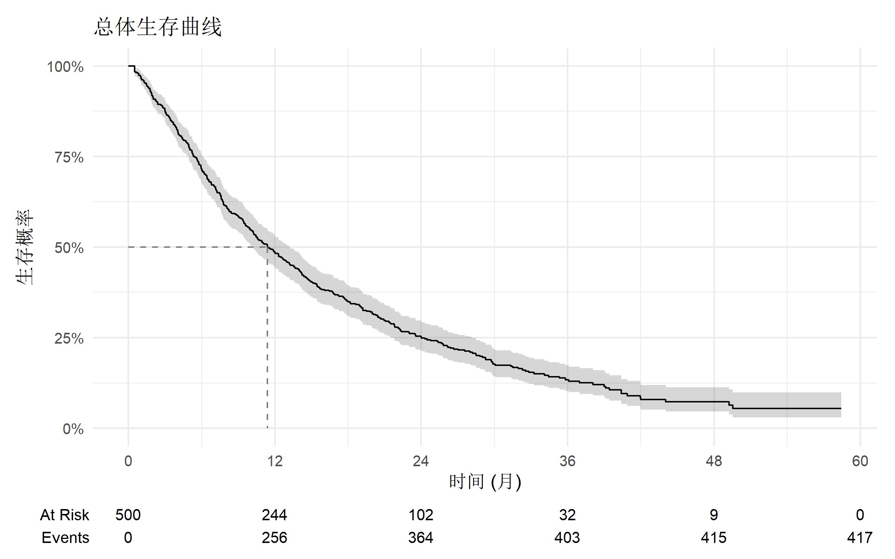
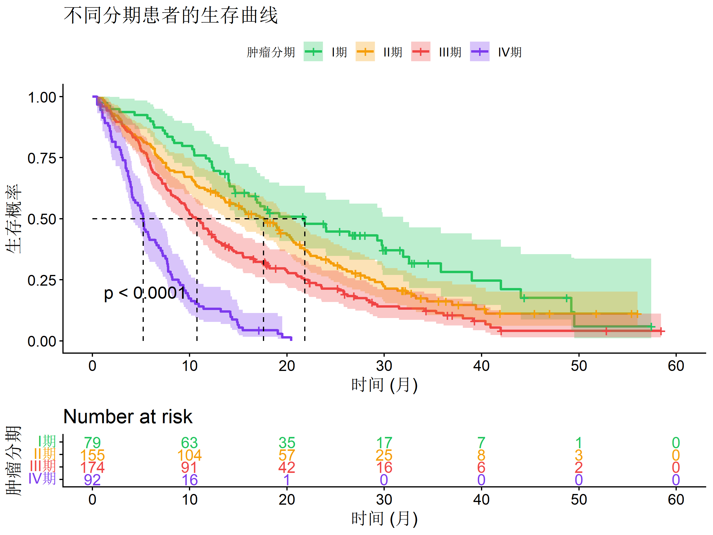
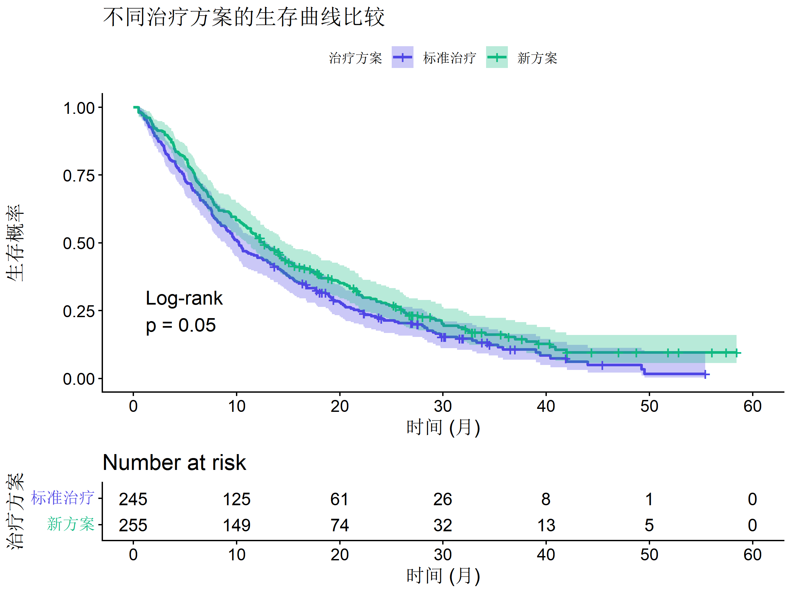
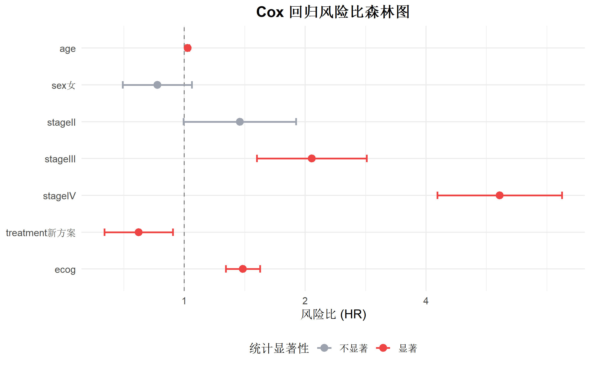
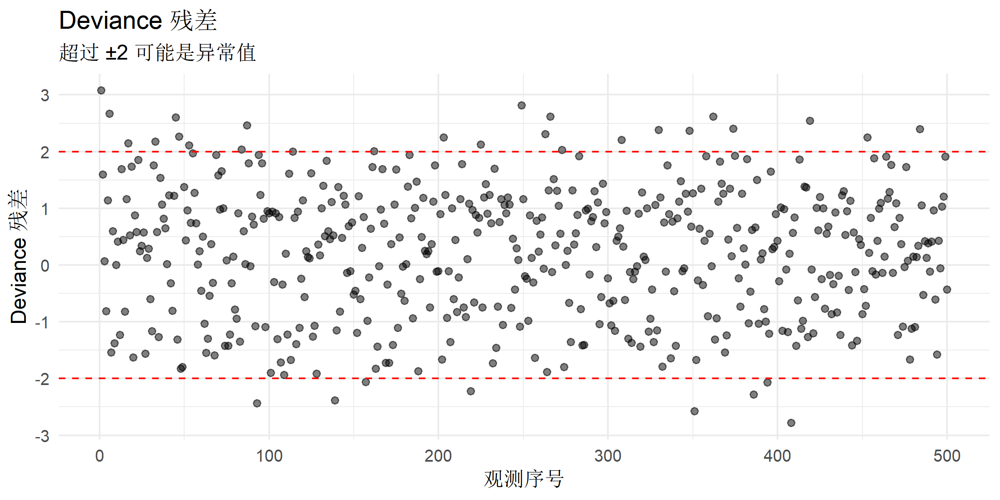
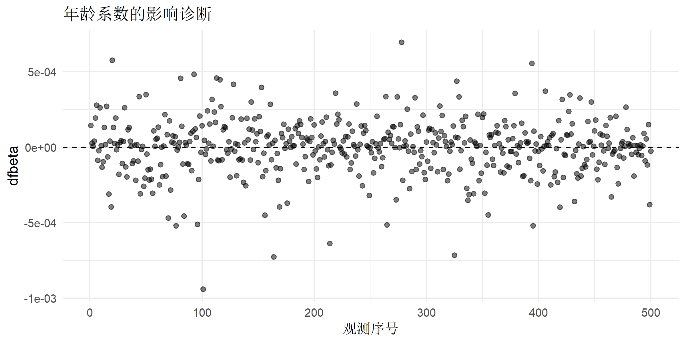
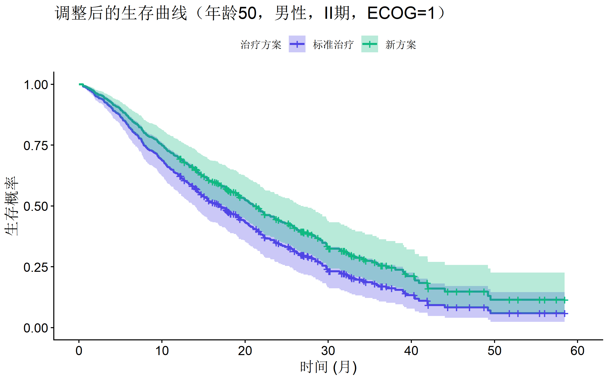
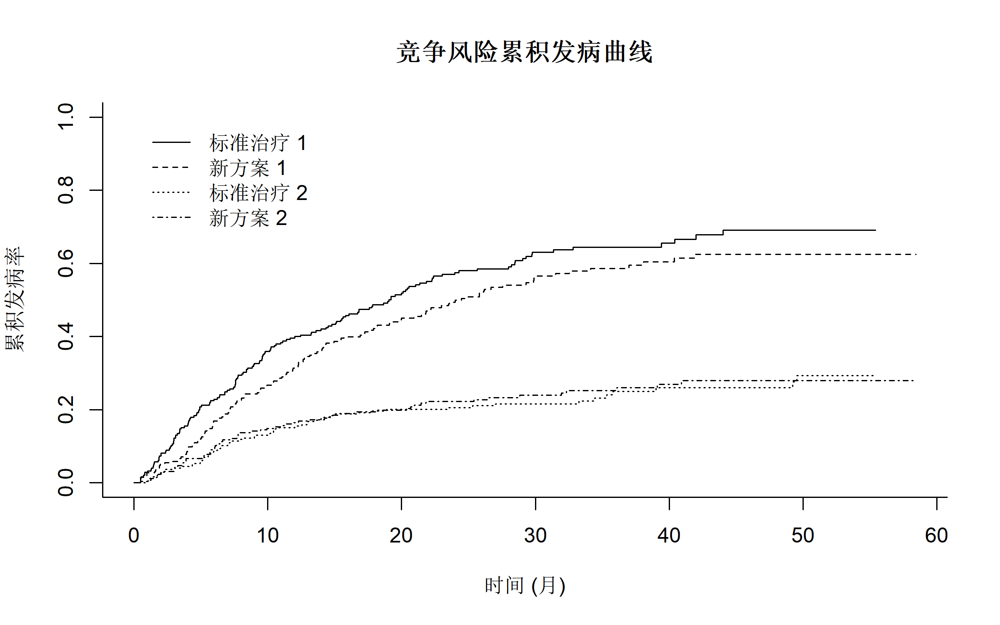

# 核心包
library(survival) # 生存分析基础
library(survminer) # 生存曲线可视化
library(tidyverse) # 数据处理
library(gtsummary) # 结果表格
library(broom) # 模型整理
library(ggsurvfit) # 现代生存曲线绑制生存分析完全指南
R语言方法
统计建模
生存分析
什么是生存分析？
生存分析（Survival Analysis） 是研究事件发生时间的统计方法，常用于分析从某个起点到事件发生的时间间隔，同时处理删失（Censoring）数据。
适用场景
| 领域 | 研究问题 |
|---|---|
| 医学研究 | 患者确诊后的生存时间 |
| 临床试验 | 药物延缓疾病进展的效果 |
| 可靠性工程 | 设备故障时间 |
| 社会科学 | 失业持续时间 |
| 营销分析 | 客户流失时间 |
核心概念
| 概念 | 定义 |
|---|---|
| 生存时间 (T) | 从起点到事件发生的时间 |
| 删失 | 研究结束时事件尚未发生 |
| 生存函数 S(t) | 存活超过时间 t 的概率：\(S(t) = P(T > t)\) |
| 风险函数 h(t) | 瞬时事件发生率：\(h(t) = \lim_{\Delta t \to 0} \frac{P(t \le T < t + \Delta t | T \ge t)}{\Delta t}\) |
| 累积风险 H(t) | \(H(t) = \int_0^t h(u) du = -\ln S(t)\) |
R 包安装与加载
数据准备
使用模拟的肿瘤患者生存数据：
# 模拟数据：肿瘤患者生存分析
set.seed(2024)
n <- 500
# 生成协变量
cancer_data <- tibble(
id = 1:n,
age = round(rnorm(n, 60, 12)),
sex = factor(sample(c("男", "女"), n, replace = TRUE, prob = c(0.55, 0.45))),
stage = factor(
sample(c("I", "II", "III", "IV"), n,
replace = TRUE,
prob = c(0.15, 0.30, 0.35, 0.20)
),
levels = c("I", "II", "III", "IV")
),
treatment = factor(sample(c("标准治疗", "新方案"), n, replace = TRUE)),
ecog = sample(0:3, n, replace = TRUE, prob = c(0.3, 0.4, 0.2, 0.1))
)
# 生成生存时间（Weibull分布，受协变量影响）
cancer_data <- cancer_data |>
mutate(
# 真实风险
log_hr = 0.02 * (age - 60) +
0.2 * (sex == "男") +
0.3 * (stage == "II") +
0.8 * (stage == "III") +
1.5 * (stage == "IV") +
-0.4 * (treatment == "新方案") +
0.3 * ecog,
# 生存时间（Weibull分布）
survival_time = rweibull(n, shape = 1.2, scale = 36 * exp(-log_hr / 1.2)),
survival_time = pmax(survival_time, 0.5), # 最小0.5个月
# 删失（随访结束或失访）
censor_time = runif(n, 12, 60),
# 观察时间和事件状态
time = pmin(survival_time, censor_time),
status = as.integer(survival_time <= censor_time)
) |>
select(id, age, sex, stage, treatment, ecog, time, status)
# 查看数据
glimpse(cancer_data)Rows: 500
Columns: 8
$ id <int> 1, 2, 3, 4, 5, 6, 7, 8, 9, 10, 11, 12, 13, 14, 15, 16, 17, 1…
$ age <dbl> 72, 66, 59, 57, 74, 76, 66, 58, 45, 47, 40, 66, 70, 64, 21, …
$ sex <fct> 女, 男, 男, 女, 女, 男, 男, 女, 女, 男, 男, 男, 男, 男, 女, 女, 男, 女, 男, 女, …
$ stage <fct> II, III, IV, II, I, I, II, III, I, IV, III, III, II, III, II…
$ treatment <fct> 新方案, 新方案, 标准治疗, 新方案, 标准治疗, 标准治疗, 标准治疗, 新方案, 标准治疗, 标准治疗, 新方案,…
$ ecog <int> 0, 1, 2, 0, 1, 3, 0, 3, 1, 3, 0, 1, 2, 1, 0, 0, 0, 1, 1, 0, …
$ time <dbl> 0.500000, 3.071374, 4.690484, 15.059639, 7.465502, 0.500000,…
$ status <int> 1, 1, 1, 0, 1, 1, 0, 1, 0, 1, 1, 1, 1, 1, 0, 1, 1, 1, 1, 0, …# 事件率
mean(cancer_data$status)[1] 0.834生存对象
# 创建生存对象
surv_obj <- Surv(time = cancer_data$time, event = cancer_data$status)
# 查看前10个观测
head(surv_obj, 10) [1] 0.500000 3.071374 4.690484 15.059639+ 7.465502 0.500000
[7] 27.566708+ 6.799167 34.508659+ 4.406258 # + 号表示删失Kaplan-Meier 生存曲线
总体生存曲线
# 拟合 KM 曲线
km_fit <- survfit(Surv(time, status) ~ 1, data = cancer_data)
# 查看摘要
summary(km_fit, times = c(12, 24, 36, 48, 60))Call: survfit(formula = Surv(time, status) ~ 1, data = cancer_data)
time n.risk n.event survival std.err lower 95% CI upper 95% CI
12 244 256 0.4880 0.0224 0.4461 0.534
24 102 108 0.2516 0.0202 0.2150 0.294
36 32 39 0.1342 0.0179 0.1033 0.174
48 9 12 0.0727 0.0165 0.0466 0.113# 使用 ggsurvfit 绑制（推荐）
survfit2(Surv(time, status) ~ 1, data = cancer_data) |>
ggsurvfit() +
add_confidence_interval() +
add_risktable() +
add_quantile(y_value = 0.5, color = "gray50", linetype = "dashed") +
scale_y_continuous(labels = scales::percent_format(), limits = c(0, 1)) +
scale_x_continuous(breaks = seq(0, 60, 12)) +
labs(
title = "总体生存曲线",
x = "时间 (月)",
y = "生存概率"
) +
theme_minimal(base_size = 12)
分组生存曲线
# 按分期分组
km_stage <- survfit(Surv(time, status) ~ stage, data = cancer_data)
# 使用 survminer 绑制
ggsurvplot(
km_stage,
data = cancer_data,
pval = TRUE, # 显示 log-rank p 值
conf.int = TRUE, # 置信区间
risk.table = TRUE, # 风险表
risk.table.col = "strata",
surv.median.line = "hv", # 中位生存线
palette = c("#22c55e", "#f59e0b", "#ef4444", "#7c3aed"),
legend.labs = c("I期", "II期", "III期", "IV期"),
legend.title = "肿瘤分期",
xlab = "时间 (月)",
ylab = "生存概率",
title = "不同分期患者的生存曲线"
)
按治疗方案分组
km_treatment <- survfit(Surv(time, status) ~ treatment, data = cancer_data)
ggsurvplot(
km_treatment,
data = cancer_data,
pval = TRUE,
pval.method = TRUE,
conf.int = TRUE,
risk.table = TRUE,
palette = c("#4f46e5", "#10b981"),
legend.labs = c("标准治疗", "新方案"),
legend.title = "治疗方案",
xlab = "时间 (月)",
ylab = "生存概率",
title = "不同治疗方案的生存曲线比较"
)
Log-rank 检验
Log-rank 检验用于比较两组或多组生存曲线是否有显著差异。
# 两组比较
logrank_treatment <- survdiff(Surv(time, status) ~ treatment, data = cancer_data)
logrank_treatmentCall:
survdiff(formula = Surv(time, status) ~ treatment, data = cancer_data)
N Observed Expected (O-E)^2/E (O-E)^2/V
treatment=标准治疗 245 213 193 2.06 3.84
treatment=新方案 255 204 224 1.77 3.84
Chisq= 3.8 on 1 degrees of freedom, p= 0.05 # 多组比较
logrank_stage <- survdiff(Surv(time, status) ~ stage, data = cancer_data)
logrank_stageCall:
survdiff(formula = Surv(time, status) ~ stage, data = cancer_data)
N Observed Expected (O-E)^2/E (O-E)^2/V
stage=I 79 54 93.3 16.57 21.66
stage=II 155 121 153.0 6.68 10.63
stage=III 174 151 137.5 1.33 1.99
stage=IV 92 91 33.2 100.42 114.90
Chisq= 133 on 3 degrees of freedom, p= <2e-16 趋势检验
对于有序分类变量（如分期），可使用趋势检验：
# 趋势检验
cancer_data$stage_num <- as.numeric(cancer_data$stage)
logrank_trend <- survdiff(Surv(time, status) ~ stage_num, data = cancer_data)
logrank_trendCall:
survdiff(formula = Surv(time, status) ~ stage_num, data = cancer_data)
N Observed Expected (O-E)^2/E (O-E)^2/V
stage_num=1 79 54 93.3 16.57 21.66
stage_num=2 155 121 153.0 6.68 10.63
stage_num=3 174 151 137.5 1.33 1.99
stage_num=4 92 91 33.2 100.42 114.90
Chisq= 133 on 3 degrees of freedom, p= <2e-16 Cox 比例风险模型
单因素分析
# 单因素 Cox 回归
univar_cox <- function(data, time_var, status_var, predictors) {
results <- map_dfr(predictors, function(var) {
formula <- as.formula(paste0("Surv(", time_var, ", ", status_var, ") ~ ", var))
model <- coxph(formula, data = data)
tidy(model, conf.int = TRUE, exponentiate = TRUE) |>
mutate(variable = var) |>
select(variable, term, estimate, conf.low, conf.high, p.value)
})
results |>
mutate(
HR_CI = paste0(
round(estimate, 2), " (",
round(conf.low, 2), "-",
round(conf.high, 2), ")"
)
)
}
predictors <- c("age", "sex", "stage", "treatment", "ecog")
univar_results <- univar_cox(cancer_data, "time", "status", predictors)
univar_results |>
select(variable, term, HR_CI, p.value) |>
mutate(p.value = format.pval(p.value, digits = 3))# A tibble: 7 × 4
variable term HR_CI p.value
<chr> <chr> <chr> <chr>
1 age age 1.02 (1.01-1.03) 8.51e-05
2 sex sex女 0.9 (0.74-1.1) 0.3131
3 stage stageII 1.39 (1.01-1.92) 0.0444
4 stage stageIII 1.98 (1.45-2.71) 1.79e-05
5 stage stageIV 5.53 (3.88-7.87) < 2e-16
6 treatment treatment新方案 0.83 (0.68-1) 0.0505
7 ecog ecog 1.32 (1.19-1.45) 4.67e-08多因素 Cox 模型
# 多因素 Cox 回归
cox_full <- coxph(
Surv(time, status) ~ age + sex + stage + treatment + ecog,
data = cancer_data
)
summary(cox_full)Call:
coxph(formula = Surv(time, status) ~ age + sex + stage + treatment +
ecog, data = cancer_data)
n= 500, number of events= 417
coef exp(coef) se(coef) z Pr(>|z|)
age 0.018473 1.018645 0.004417 4.182 2.89e-05 ***
sex女 -0.155118 0.856314 0.101451 -1.529 0.12627
stageII 0.318329 1.374828 0.164579 1.934 0.05309 .
stageIII 0.730977 2.077108 0.160801 4.546 5.47e-06 ***
stageIV 1.808575 6.101745 0.182122 9.931 < 2e-16 ***
treatment新方案 -0.262249 0.769320 0.100184 -2.618 0.00885 **
ecog 0.335977 1.399307 0.050137 6.701 2.07e-11 ***
---
Signif. codes: 0 '***' 0.001 '**' 0.01 '*' 0.05 '.' 0.1 ' ' 1
exp(coef) exp(-coef) lower .95 upper .95
age 1.0186 0.9817 1.0099 1.0275
sex女 0.8563 1.1678 0.7019 1.0447
stageII 1.3748 0.7274 0.9958 1.8982
stageIII 2.0771 0.4814 1.5156 2.8466
stageIV 6.1017 0.1639 4.2700 8.7192
treatment新方案 0.7693 1.2998 0.6322 0.9362
ecog 1.3993 0.7146 1.2683 1.5438
Concordance= 0.686 (se = 0.013 )
Likelihood ratio test= 168.1 on 7 df, p=<2e-16
Wald test = 177.4 on 7 df, p=<2e-16
Score (logrank) test = 196.1 on 7 df, p=<2e-16整洁输出
# 使用 gtsummary 生成专业表格
cox_full |>
tbl_regression(
exponentiate = TRUE,
label = list(
age ~ "年龄",
sex ~ "性别",
stage ~ "肿瘤分期",
treatment ~ "治疗方案",
ecog ~ "ECOG 评分"
)
) |>
add_global_p() |>
bold_p() |>
add_nevent(location = "level") |>
modify_header(label = "**变量**") |>
modify_caption("**表. 多因素 Cox 回归分析结果**")| 变量 | Event N | HR | 95% CI | p-value |
|---|---|---|---|---|
| 年龄 | 417 | 1.02 | 1.01, 1.03 | <0.001 |
| 性别 | 0.12 | |||
| 男 | 251 | — | — | |
| 女 | 166 | 0.86 | 0.70, 1.04 | |
| 肿瘤分期 | <0.001 | |||
| I | 54 | — | — | |
| II | 121 | 1.37 | 1.00, 1.90 | |
| III | 151 | 2.08 | 1.52, 2.85 | |
| IV | 91 | 6.10 | 4.27, 8.72 | |
| 治疗方案 | 0.009 | |||
| 标准治疗 | 213 | — | — | |
| 新方案 | 204 | 0.77 | 0.63, 0.94 | |
| ECOG 评分 | 417 | 1.40 | 1.27, 1.54 | <0.001 |
| Abbreviations: CI = Confidence Interval, HR = Hazard Ratio | ||||
比例风险假设检验
Cox 模型的核心假设是比例风险假设：各组的风险比随时间保持恒定。
Schoenfeld 残差检验
# PH 假设检验
ph_test <- cox.zph(cox_full)
print(ph_test) chisq df p
age 1.3144 1 0.25
sex 0.0453 1 0.83
stage 3.7598 3 0.29
treatment 0.3548 1 0.55
ecog 0.0327 1 0.86
GLOBAL 5.5139 7 0.60# p < 0.05 表示违反比例风险假设# 可视化 Schoenfeld 残差
ggcoxzph(ph_test)
解决 PH 假设违反
# 方法 1：分层分析（对违反假设的变量分层）
cox_strata <- coxph(
Surv(time, status) ~ age + sex + strata(stage) + treatment + ecog,
data = cancer_data
)
summary(cox_strata)Call:
coxph(formula = Surv(time, status) ~ age + sex + strata(stage) +
treatment + ecog, data = cancer_data)
n= 500, number of events= 417
coef exp(coef) se(coef) z Pr(>|z|)
age 0.018178 1.018344 0.004429 4.104 4.05e-05 ***
sex女 -0.153714 0.857517 0.102271 -1.503 0.1328
treatment新方案 -0.238311 0.787958 0.101020 -2.359 0.0183 *
ecog 0.339531 1.404289 0.050752 6.690 2.23e-11 ***
---
Signif. codes: 0 '***' 0.001 '**' 0.01 '*' 0.05 '.' 0.1 ' ' 1
exp(coef) exp(-coef) lower .95 upper .95
age 1.0183 0.9820 1.0095 1.0272
sex女 0.8575 1.1662 0.7018 1.0478
treatment新方案 0.7880 1.2691 0.6464 0.9605
ecog 1.4043 0.7121 1.2713 1.5512
Concordance= 0.614 (se = 0.016 )
Likelihood ratio test= 62.07 on 4 df, p=1e-12
Wald test = 61.56 on 4 df, p=1e-12
Score (logrank) test = 62.32 on 4 df, p=9e-13# 方法 2：时间依赖协变量（高级用法）
# 注意：此方法需要仔细处理 stage 变量的转换
cox_tv <- coxph(
Surv(time, status) ~ age + sex + stage + treatment + ecog + tt(ecog),
data = cancer_data,
tt = function(x, t, ...) x * log(t + 1)
)森林图可视化
# 绑制森林图（使用 survminer 的 ggforest）
ggforest(cox_full,
data = cancer_data,
main = "多因素 Cox 回归森林图",
fontsize = 0.9
)自定义森林图
# 提取 HR 数据
hr_data <- tidy(cox_full, conf.int = TRUE, exponentiate = TRUE) |>
mutate(
term = factor(term, levels = rev(term)),
significant = p.value < 0.05
)
ggplot(hr_data, aes(x = estimate, y = term)) +
geom_vline(xintercept = 1, linetype = "dashed", color = "gray50") +
geom_errorbarh(aes(xmin = conf.low, xmax = conf.high, color = significant),
height = 0.2, linewidth = 0.8
) +
geom_point(aes(color = significant), size = 3) +
scale_x_log10(breaks = c(0.5, 1, 2, 4)) +
scale_color_manual(
values = c("TRUE" = "#ef4444", "FALSE" = "#9ca3af"),
labels = c("TRUE" = "显著", "FALSE" = "不显著")
) +
labs(
title = "Cox 回归风险比森林图",
x = "风险比 (HR)",
y = NULL,
color = "统计显著性"
) +
theme_minimal(base_size = 12) +
theme(
plot.title = element_text(hjust = 0.5, face = "bold"),
legend.position = "bottom"
)
模型诊断
残差分析
# Martingale 残差（检测非线性）
cancer_data$resid_martingale <- residuals(cox_full, type = "martingale")
ggplot(cancer_data, aes(x = age, y = resid_martingale)) +
geom_point(alpha = 0.5) +
geom_smooth(method = "loess", color = "#4f46e5") +
geom_hline(yintercept = 0, linetype = "dashed") +
labs(
title = "Martingale 残差 vs 年龄",
subtitle = "检验年龄与风险的线性关系",
x = "年龄",
y = "Martingale 残差"
) +
theme_minimal(base_size = 12)
# Deviance 残差（检测异常值）
cancer_data$resid_deviance <- residuals(cox_full, type = "deviance")
ggplot(cancer_data, aes(x = seq_along(resid_deviance), y = resid_deviance)) +
geom_point(alpha = 0.5) +
geom_hline(yintercept = c(-2, 2), linetype = "dashed", color = "red") +
labs(
title = "Deviance 残差",
subtitle = "超过 ±2 可能是异常值",
x = "观测序号",
y = "Deviance 残差"
) +
theme_minimal(base_size = 12)
影响诊断
# dfbeta（影响分析）
dfbeta_res <- residuals(cox_full, type = "dfbeta")
# 绑制第一个变量（age）的 dfbeta
plot_data <- tibble(
index = 1:nrow(cancer_data),
dfbeta_age = dfbeta_res[, 1] # 使用列索引
)
ggplot(plot_data, aes(x = index, y = dfbeta_age)) +
geom_point(alpha = 0.5) +
geom_hline(yintercept = 0, linetype = "dashed") +
labs(
title = "年龄系数的影响诊断",
x = "观测序号",
y = "dfbeta"
) +
theme_minimal(base_size = 12)
预后预测
调整生存曲线
# 根据 Cox 模型绑制调整后的生存曲线
adjusted_surv <- survfit(cox_full,
newdata = data.frame(
age = c(50, 50),
sex = factor(c("男", "男"), levels = levels(cancer_data$sex)),
stage = factor(c("II", "II"), levels = levels(cancer_data$stage)),
treatment = factor(c("标准治疗", "新方案"),
levels = levels(cancer_data$treatment)
),
ecog = c(1, 1)
)
)
# 绑制调整后生存曲线
ggsurvplot(
adjusted_surv,
data = cancer_data,
conf.int = TRUE,
palette = c("#4f46e5", "#10b981"),
legend.labs = c("标准治疗", "新方案"),
legend.title = "治疗方案",
xlab = "时间 (月)",
ylab = "生存概率",
title = "调整后的生存曲线（年龄50，男性，II期，ECOG=1）"
)
个体风险评分
# 计算线性预测值（风险评分）
cancer_data$risk_score <- predict(cox_full, type = "lp")
# 根据风险评分分组
cancer_data <- cancer_data |>
mutate(
risk_group = cut(risk_score,
breaks = quantile(risk_score, c(0, 0.33, 0.67, 1)),
labels = c("低风险", "中风险", "高风险"),
include.lowest = TRUE
)
)
# 绘制风险分层生存曲线
km_risk <- survfit(Surv(time, status) ~ risk_group, data = cancer_data)
ggsurvplot(
km_risk,
data = cancer_data,
pval = TRUE,
conf.int = TRUE,
risk.table = TRUE,
palette = c("#22c55e", "#f59e0b", "#ef4444"),
legend.title = "风险分组",
xlab = "时间 (月)",
ylab = "生存概率",
title = "基于 Cox 模型的风险分层"
)
竞争风险分析
当存在多种事件类型时，需要考虑竞争风险。
# 模拟竞争风险数据
set.seed(42)
competing_data <- cancer_data |>
mutate(
# 事件类型：1=肿瘤死亡，2=其他死亡，0=删失
event_type = case_when(
status == 0 ~ 0,
rbinom(n(), 1, 0.7) == 1 ~ 1, # 70% 肿瘤死亡
TRUE ~ 2 # 30% 其他死亡
)
)
table(competing_data$event_type)
0 1 2
83 295 122 # 使用 tidycmprsk 包（如已安装）
# library(tidycmprsk)
# cuminc(Surv(time, as.factor(event_type)) ~ treatment, data = competing_data)
# 或使用 cmprsk 包
library(cmprsk)
# 累积发病函数
cif <- cuminc(
ftime = competing_data$time,
fstatus = competing_data$event_type,
group = competing_data$treatment
)
# 可视化
plot(cif,
xlab = "时间 (月)", ylab = "累积发病率",
main = "竞争风险累积发病曲线"
)
参数生存模型
除 Cox 模型外，还可使用参数模型：
# 指数模型
surv_exp <- survreg(Surv(time, status) ~ age + sex + stage + treatment,
data = cancer_data, dist = "exponential"
)
# Weibull 模型
surv_weibull <- survreg(Surv(time, status) ~ age + sex + stage + treatment,
data = cancer_data, dist = "weibull"
)
# 对数正态模型
surv_lognormal <- survreg(Surv(time, status) ~ age + sex + stage + treatment,
data = cancer_data, dist = "lognormal"
)
# 比较模型
AIC(surv_exp, surv_weibull, surv_lognormal) df AIC
surv_exp 7 3124.892
surv_weibull 8 3102.135
surv_lognormal 8 3128.699常见问题与陷阱
1. 删失类型
| 删失类型 | 定义 | 处理方法 |
|---|---|---|
| 右删失 | 事件发生在观察期后 | 标准方法适用 |
| 左删失 | 事件发生在观察期前 | 需要特殊方法 |
| 区间删失 | 事件发生在两次观察之间 | survival::Surv(..., type="interval") |
2. 违反 PH 假设
# 解决方案
# 1. 分层分析
coxph(Surv(time, status) ~ x1 + strata(x2), data = data)
# 2. 时间依赖协变量
coxph(Surv(time, status) ~ x1 + x1:log(time), data = data)
# 3. 加速失效时间模型
survreg(Surv(time, status) ~ x1 + x2, data = data, dist = "weibull")3. 时间依赖协变量
# 处理随时间变化的协变量
# 需要转换为计数过程格式
library(survival)
tmerge(data, data, id = id, event = event(tstop, status)) |>
tmerge(..., tdc(time_of_change, new_value))4. 样本量计算
# 计算所需样本量
library(powerSurvEpi)
# 示例：检测 HR = 0.7 的差异
# ssizeCT(
# power = 0.8,
# k = 1, # 两组比例 1:1
# pE = 0.3, # 对照组事件率
# pC = 0.3,
# RR = 0.7, # 风险比
# alpha = 0.05
# )完整分析模板
# ========== 生存分析完整流程 ==========
library(survival)
library(survminer)
# 1. KM 曲线
km_fit <- survfit(Surv(time, status) ~ group, data = data)
ggsurvplot(km_fit, data = data, pval = TRUE, risk.table = TRUE)
# 2. Log-rank 检验
survdiff(Surv(time, status) ~ group, data = data)
# 3. Cox 回归
cox_model <- coxph(Surv(time, status) ~ x1 + x2 + x3, data = data)
summary(cox_model)
# 4. PH 假设检验
cox.zph(cox_model)
# 5. 森林图
ggforest(cox_model, data = data)
# 6. 结果表格
tbl_regression(cox_model, exponentiate = TRUE)总结
| 分析目的 | 方法 | R 函数 |
|---|---|---|
| 描述生存情况 | Kaplan-Meier | survfit() |
| 组间比较 | Log-rank 检验 | survdiff() |
| 多因素分析 | Cox 回归 | coxph() |
| 可视化 | 生存曲线 | survminer::ggsurvplot() |
| 假设检验 | PH 假设 | cox.zph() |
报告生存分析的 Checklist
推荐阅读
- Kleinbaum DG, Klein M. Survival Analysis: A Self-Learning Text (3rd ed.)
- Therneau TM, Grambsch PM. Modeling Survival Data
- STHDA 生存分析教程